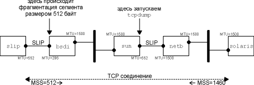
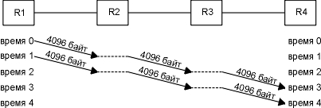

Глава 24 Будущее TCP и его производительность
TCP функционирует уже в течение многих лет и по SLIP каналам со скоростью 1200 бит в секунду и по Ethernet. В 80-х и начале 90-х годов Ethernet был основным типом канального уровня для TCP/IP. Несмотря на то, что TCP корректно работает на скоростях больших, чем предоставляемые Ethernet (телефонные линии T3, FDDI и гигабитные сети, например), на повышенных скоростях начинают сказываться некоторые ограничения TCP.
В этой главе рассматриваются некоторые предложения посвященные модификациям TCP, которые позволяют добиться максимальной пропускной способности на высоких скоростях. Во-первых, мы рассмотрим механизм определения транспортного MTU, который мы уже упоминали раньше. Сейчас мы подробно рассмотрим, как он функционирует с TCP. Этот алгоритм позволяет TCP использовать MTU больше чем 536 для соединений по глобальным сетям, что, в свою очередь, повышает пропускную способность.
Затем мы рассмотрим каналы с повышенной пропускной способностью (long fat pipes), сети, имеющие большую емкость канала зависящую от полосы пропускания (bandwidth-delay product), и ограничения TCP, которые становятся существенными для этих сетей. Здесь описаны две новые опции TCP, используемые для работы с каналами с повышенной пропускной способностью (long fat pipes): опция масштабирования окна (позволяет использовать окна TCP с максимальным размером больше чем 65535 байт) и опция временной марки. Опция временной марки позволяет TCP осуществлять более аккуратный расчет RTT для сегментов данных, а также предоставляет защиту от перехода номеров последовательности через ноль, что может возникнуть на высоких скоростях. Эти две опции определены в RFC 1323 [Jacobson, Braden, and Borman 1992].
Также мы рассмотрим T/TCP - модификацию TCP для транзакций. Режим транзакций это характеристики коммуникации, при которых на запрос от клиента приходит отклик от сервера. Основная задача T/TCP заключается в том, чтобы уменьшить количество сегментов, которыми обмениваются два участника соединения, при этом отпадает необходимость в трехразовом рукопожатии (three-way handshake) и четырех сегментах, которыми необходимо обменяться, чтобы закрыть соединение. При этом клиент получает отклик от сервера через время равное одному RTT плюс время, необходимое для обработки запроса.
И самое замечательное в этих новых опциях - в характеристике определения транспортного MTU, опции масштабирования окна, опции временной марки и T/TCP - это то, что они совместимы с уже существующими реализациями TCP. Новые системы, которые имеют эти опции, могут общаться с более ранними системами. За исключением дополнительных полей в ICMP сообщении, которые могут быть использованы при определении транспортного MTU, новые опции должны быть реализованы только на конечных системах, которые хотят пользоваться их преимуществами.
Мы закончим эту главу рассмотрением публикаций, вышедших в настоящее время и имеющих отношение к производительности TCP.
В разделе "Транспортный MTU" главы 2 мы описали концепцию транспортного MTU (path MTU). Это минимальный MTU в любой из сетей, по которым проходит маршрут между двумя хостами. При определении транспортного MTU в IP заголовке устанавливается бит "не фрагментировать" (DF - don't fragment), что позволяет определить, необходимо ли какому-либо маршрутизатору на текущем маршруте фрагментировать IP датаграммы, которые мы посылаем. В разделе "ICMP ошибки о недоступности" главы 11 мы показали ICMP ошибку о недоступности, генерируемую маршрутизатором, которому необходимо перенаправить IP датаграмму с установленным битом DF, когда MTU меньше чем размер датаграммы. В разделе "Определение транспортного MTU с использованием Traceroute" главы 11 мы показали версию программы traceroute, которая использует этот механизм, чтобы определить транспортный MTU к пункту назначения. В разделе "Определение транспортного MTU при использовании UDP" главы 11 мы видели, как UDP определял транспортный MTU. В этом разделе мы просмотрим, как TCP использует этот механизм. Это описано в RFC 1191 [Mogul and Deering 1990].
Из всех систем, которые используются в этой книге (см. вступление), только Solaris 2.x поддерживает определение транспортного MTU.
Алгоритм определения транспортного MTU TCP работает следующим образом. Когда соединение установлено, TCP использует минимальный MTU исходящего интерфейса или MSS, объявленный удаленным концом, в качестве исходного размера сегмента. Алгоритм определения транспортного MTU не позволяет TCP превосходить MSS, объявленный удаленным концом. Если удаленный конец не указал MSS, то он устанавливается по умолчанию в значение равное 536. Реализации могут сохранить информацию о транспортном MTU определенного канала, как мы говорили в разделе "Показатели на маршрут" главы 21.
После того как выбран исходный размер сегмента, во всех IP датаграммах, отправляемых TCP по этому соединению, установливается бит DF. Если промежуточному маршрутизатору необходимо фрагментировать датаграмму, в которой установлен бит DF, он отбрасывает датаграмму и генерирует ICMP ошибку "не могу фрагментировать" (can't fragment). Это описано в разделе "ICMP ошибки о недоступности" главы 11. Если принята такая ICMP ошибка, TCP уменьшает размер сегмента и повторяет передачу. Если маршрутизатор сгенерировал новую ICMP ошибку, размер сегмента может быть установлен в MTU следующей пересылки минус размеры IP и TCP заголовков.
Если возвратилась старая ICMP ошибка, должно быть использовано следующее меньшее значение MTU (рисунок 2.5). Когда осуществляются повторные передачи, вызванные этими ICMP ошибками, окно переполнения не должно изменяться, вместо этого должен быть использован медленный старт.
Так как маршруты могут меняться со временем, по истечении определенного времени после последнего уменьшения транспортного MTU, можно попробовать большее значение (до величины минимального MSS, объявленного удаленным концом, или MTU исходящего интерфейса). RFC 1191 рекомендует, чтобы этот временной интервал составлял примерно 10 минут. (Мы видели в разделе "Определение транспортного MTU при использовании UDP" главы 11, что Solaris 2.2 использует для этих целей 30-секундный тайм-аут.)
Используя обычное для работы в глобальных сетях значение MSS по умолчанию равное 536, алгоритм определения транспортного MTU избегает фрагментации по промежуточным каналам с MTU меньшим чем 576 (что встречается довольно редко). Также можно избежать фрагментации в локальных сетях, когда промежуточный канал (Ethernet) имеет меньший MTU, чем сеть конечного пункта назначения (Token ring). В процессе определения транспортного MTU (при работе в глобальных сетях с MTU большим чем 576), системы не должны использовать MSS по умолчанию равный 536 байт для нелокальных пунктов назначения. Предпочтительней выбирать MSS равный MTU исходящего интерфейса (естественно, минус размер IP и TCP заголовков). (В приложении Е мы увидим, что большинство реализаций позволяют системным администраторам изменить значение MSS принятое по умолчанию.)
Пример
Увидеть, как происходит определение транспортного MTU, можно в том случае, когда промежуточный маршрутизатор имеет MTU меньше чем MTU интерфейсов конечных точек. На рисунке 24.1 показана топология для данного примера.

Рисунок 24.1 Топология для примера транспортного MTU.
Мы установим соединение с хоста solaris (который поддерживает механизм определения транспортного MTU) на хост slip. Установки идентичны тем, которые использованы для примера определения транспортного MTU в случае UDP (рисунок 11.13), однако здесь мы установили MTU интерфейса на slip равный 552, вместо его обычного значения 296. Это заставляет slip объявить MSS равный 512. Мы оставили MTU = 296 на SLIP канале на bsdi, поэтому TCP сегменты, размером больше чем 256, должны быть фрагментированы. Посмотрим, как механизм определения транспортного MTU на solaris обработает подобную ситуацию.
Запустим программу sock на хосте solaris и осуществим одну запись величиной 512 байт на discard сервис хоста slip:
solaris % sock -i -n1 -w512 slip discard
На рисунке 24.2 мы показали вывод команды tcpdump, полученный на SLIP интерфейсе хоста sun.
Значение MSS в строках 1 и 2 как раз такое, как и ожидалось. Затем мы видим, что solaris отправил сегмент размером 512 байт (строка 3), содержащий 512 байт данных и подтверждение на SYN. (Мы видели эту комбинацию ACK вместе с SYN в первом сегменте данных в упражнении 9 главы 18.)
1 0.0
solaris.33016
> slip.discard: S 1171660288:1171660288(0)
win
8760 <mss 1460> (DF)
2 0.101597 (0.1016) slip.discard > solaris.33016: S
137984001:137984001(0)
ack
1171660289 win 4096
<mss
512>
3 0.630609 (0.5290) solaris.33016 > slip.discard: P 1:513(512)
ack
1 win 9216 (DF)
4 0.634433 (0.0038) bsdi > solaris: icmp:
slip
unreachable - need to frag, mtu = 296 (DF)
5 0.660331 (0.0259) solaris.33016 > slip.discard: F 513:513(0)
ack
1 win 9216 (DF)
6 0.752664 (0.0923) slip.discard > solaris.33016: . ack 1 win
4096
7 1.110342 (0.3577) solaris.33016 > slip.discard: P 1:257(256)
ack
1 win 9216 (DF)
8 1.439330 (0.3290) slip.discard > solaris.33016: . ack 257 win
3840
9 1.770154 (0.3308) solaris.33016 > slip.discard:FP
257:513(256)
ack
1 win 9216 (DF)
10 2.095987 (0.3258) slip.discard > solaris.33016: . ack 514
win 3840
11 2.138193 (0.0422) slip.discard > solaris.33016: F 1:1(0) ack
514 win 4096
12 2.310103 (0.1719) solaris.33016 > slip.discard: . ack 2 win
9216 (DF)
Рисунок 24.2 Вывод команды tcpdump для определения транспортного MTU.
В строке 4 генерируется ICMP ошибка, и мы видим, что маршрутизатор bsdi генерирует новую ICMP ошибку, содержащую MTU исходящего интерфейса.
Так случилось, что перед тем, как эта ошибка вернулась на хост solaris, был отправлен FIN (строка 5). Так как slip не получил 512 байт данных, отброшенных маршрутизатором bsdi, и не ожидает этого номера последовательности (513), он отправляет ожидаемый номером последовательности (1) в строке 6.
В это время ICMP ошибка вернулась на solaris, и было повторно передано 512 байт данных в двух сегментах размером 256 байт (строки 7 и 9). Оба сегмента отправлены с установленным битом DF, так как дальше за маршрутизатором bsdi может быть еще один маршрутизатор, у которого MTU еще меньше.
Была осуществлена довольно долгая передача (она заняла примерно 15 минут), и после перехода от исходного размера сегмента равного 512 байт к сегментам размером 256 байт, solaris уже больше никогда не пытался отправить сегменты большего размера.
Народная мудрость гласит, что лучше использовать большие пакеты [Mogul 1993, Sec.15.2.8], потому что отправка меньшего количества больших пакетов "дешевле", чем отправка большего количества маленьких пакетов. (Подразумевается, что пакеты не настолько велики, чтобы вызвать фрагментацию.) Не все согласны с этим положением [Bellovin 1993].
Представьте себе следующий пример. Мы посылаем 8192 байта через четыре маршрутизатора, каждый из которых подключен к телефонной линии T1 (1544000 бит/сек). Во-первых, мы используем два пакета размером 4096 байт, как показано на рисунке 24.3.

Рисунок 24.3 Отправка двух пакетов размером 4096 байт через четыре маршрутизатора.
Основная проблема заключается в том, что маршрутизаторы это устройства, которые работают по принципу "сохранить и перенаправить". Они обычно получают входящий пакет целиком, проверяют на правильность IP заголовок, включая контрольную сумму IP, принимают решение о маршрутизации и затем начинают отправку исходящего пакета. На этом рисунке мы предположили идеальный случай, когда на операции, осуществляемые в маршрутизаторе, время не тратится, (горизонтальные пунктирные линии). Тем не менее, на отправку всех 8192 байт от R1 до R4 будет истрачено четыре отрезка времени. Время на каждую пересылку будет составлять
[(4096 + 40 байт) x 8 бит/байт]/1544000 бит/сек = 21,4 миллисекунды на пересылку
(IP и TCP заголовки составляют 40 байт.) Полное время, которое тратится на отправку данных, состоит из количества пакетов плюс количество пересылок минус один и составляет четыре отрезка времени или 85,6 миллисекунды. Каждый канал остается неиспользованным в течение двух отрезков времени или 42,8 миллисекунды.
На рисунке 24.4 показано что произойдет, если мы пошлем 16 пакетов размером 512 байт.

Рисунок 24.4 Отправка 16 пакетов размером 512 байт через четыре маршрутизатора.
Это передача займет больше отрезков времени, однако каждый отрезок короче, так как отправляются пакеты меньшего размера.
[(512 + 40 байт) x 8 бит/байт]/1544000 бит/сек = 2,9 миллисекунды на пересылку
Сейчас полное время составляет (18 x 2,9) = 52,2 миллисекунды. Каждый канал снова не занят в течение двух отрезков времени, что сейчас составляет 5,8 миллисекунды.
В этом примере мы игнорировали время, которое необходимо для того, чтобы вернулось подтверждение (ACK), также мы проигнорировали время, необходимое для установления и разрыва соединения, и не приняли во внимание то, что по каналам может двигаться и другой траффик. Тем не менее, расчеты в [Bellovin 1993] указывают, что отправка больших пакетов всегда эффективней. Однако, для различных сетей требуются более подробные исследования.
Каналы с повышенной пропускной способностью (Long Fat Pipes)
В разделе "Пропускная способность для неинтерактивных данных" главы 20 мы сказали, что емкость соединения можно рассчитать следующим образом
емкость (бит) = ширина полосы (бит/сек) x время возврата (сек)
и назвали это емкость канала в зависимости от полосы пропускания. Иногда эта величина называется размером канала между двумя точками.
Существующие ограничения TCP начинают влиять на производительность по мере увеличения емкости каналов. На рисунке 24.5 показаны некоторые значения для различных типов сетей.
Сеть |
Ширина полосы (бит/сек) |
Время возврата (миллисекунды) |
Емкость канала (байты) |
| Локальная сеть на основе Ethernet | 10000000 |
3 |
3750 |
| Трансконтинентальный канал, телефонная линия T1 | 1544000 |
60 |
11580 |
| Спутниковый канал, телефонная линия T1 | 1544000 |
500 |
95500 |
| Трансконтинентальный канал, телефонная линия T3 | 45000000 |
60 |
337500 |
| Трансконтинентальный гигабитный канал | 1000000000 |
60 |
7500000 |
Рисунок 24.5 Емкость канала для различных сетей.
Мы показали емкость канала в байтах, потому что именно так эта величина обычно рассчитывается на каждом конце соединения для определения размеров буферов и размеров окон.
Сети с большой емкостью канала называются сетями с повышенной пропускной способностью (LFN - long fat networks, произносится как "elephant(s)", elephant (англ.) - слон), а TCP соединения, работающие на LFN, называются каналами с повышенной пропускной способностью (long fat pipe). Возвращаясь назад к рисункам 20.11 и 20.12, можно сказать, что эти каналы могут быть расширены в горизонтальном направлении (большие RTT) или в вертикальном направлении (большая ширина полосы передачи) или в обоих направлениях. Однако, с подобными каналами с повышенной пропускной способностью возникают некоторые проблемы.
- Размер окна TCP находится в 16-битном поле TCP заголовка, ограничивая размер окна величиной равной 65535 байт. Как видно из последней колонки на рисунке 24.5, существующие сети уже требуют большего окна, чем 65535, для достижения максимальной пропускной способности. Опция масштабирования окна, описанная в разделе "Опция масштабирования окна" этой главы, решает эту проблему.
- Пакеты, теряемые в LFN, могут значительно уменьшить пропускную способность. Если потерян только один сегмент, алгоритм быстрой передачи и быстрого восстановления, который мы описали в разделе "Быстрая повторная передача и алгоритм быстрого восстановления" главы 21, сделает так, что канал не сузится. Однако, даже при использовании этого алгоритма, потеря больше чем одного пакета внутри окна обычно приводит к тому, что канал сужается. (Если канал сузился, снова используется медленный старт, что в несколько раз увеличивает время возврата, прежде чем канал будет снова заполнен.) Чтобы обработать потерю нескольких пакетов внутри окна, в RFC 1072 [Jacobson and Braden 1988] было предложено использовать cелективные подтверждения (SACK). Однако, начиная с RFC 1323, от использования этой характеристики отказались, потому что авторы обнаружили несколько технических проблем, которые необходимо решить перед включением этой опции в TCP.
- В разделе "Пример RTT" главы 21 мы видели, что большинство TCP реализаций измеряют только одно время задержки на окно. Они не измеряют RTT для каждого сегмента. Однако для функционирования в LFN требуется лучшее измерение RTT. Опция временной марки, которая описана в разделе "Опция временной марки" этой главы, позволяет оценить время передачи нескольких сегментов, включая повторно переданные.
- TCP идентифицирует каждый байт данных уникальным 32-битным номером последовательности. Что произойдет, если сегмент, задержанный в сети, появится после того как соединение, которому он принадлежал, уже закрыто, и когда установлено новое соединение между теми же двумя хостами и теми же номерами портов? Во-первых, вспомним, что поле TTL в IP заголовке содержит максимальное время жизни любой IP датаграммы - 255 пересылок или 255 секунд (что кончится первым). В разделе "Диаграмма состояний передачи TCP" главы 18 мы определили, что максимальное время жизни сегмента (MSL) это параметр, зависящий от реализации и используемый для того, чтобы не возникла подобная ситуация. Рекомендуемое значение для MSL - 2 минуты (при этом 2MSL будет равно 240 секундам), однако мы видели в разделе "Диаграмма состояний передачи TCP" главы 18, что многие реализации устанавливают MSL в 30 секунд. Еще одна проблема с номерами последовательности TCP возникает при использовании LFN. Так как величина номера последовательности ограничена, тот же самый номер последовательности будет использован повторно после того, как будет передано 4.294.967.296 байт. Что произойдет, если сегмент, содержащий байт с номером последовательности N, будет задержан в сети и появится позже, когда соединение все еще открыто? Эта проблема появится только в том случае, если тот же самый номер последовательности N повторно используется в течение периода MSL, то есть в том случае, если сеть настолько быстрая, что номер последовательности успевает повториться за время меньшее чем MSL. Для Ethernet необходимо почти 60 минут, чтобы послать такое количество данных, поэтому подобная ситуация не возможна, однако время, необходимое на то, чтобы появился номер последовательности, который уже существует в сети, уменьшается с ростом ширины пропускания сети: для телефонных линий T3 (45 Мбит/сек) требуются 12 минут, для FDDI (100 Мбит/сек) - 5 минут, а для гигабитных сетей (1000 Мбит/сек) - 34 секунды. В данном случае проблема не связана с емкостью канала, а связана с шириной полосы. В разделе "PAWS: защита от перехода номеров последовательности через ноль" этой главы мы описываем способ, с помощью которого можно решить эту проблему: алгоритм PAWS (защита от перехода номеров последовательности через ноль), который использует опцию временной марки TCP.
Положение вещей меняется, когда скорости в сетях достигают гигабитов. [Partridge 1994] описывает гигабитные сети более подробно. Здесь мы рассмотрим различие между задержкой (латенсией) и шириной полосы [Kleinrock 1992].
Представьте себе процесс отправки файла размером 1 миллион байт через Соединенные Штаты, с предполагаемой латенсией равной 30 миллисекундам. На рисунке 24.6 показаны два сценария, верхний соответствует использованию телефонной линии T1 (1544000 бит/сек), а нижний подразумевает использование сети 1 гигабит/сек. Время показано по оси ОХ, (отправитель находится слева, а получатель справа), а емкость показана по оси OY. Закрашенный прямоугольник на обоих рисунках - это 1 миллион байт, который необходимо отправить.

Рисунок 24.6 Отправка файла размером 1 Мбайт по сетям с 30-миллисекундной латенсией.
На рисунке 24.6 показано состояние обеих сетей через 30 миллисекунд. В обеих сетях первый бит данных достиг удаленного конца через 30 миллисекунд (латенсия), однако в случае сети T1 (емкость канала - 5790 байт), 994210 байт все еще находятся у отправителя, ожидая того, что они будут отправлены. Емкость гигабитной сети, составляет 3750000 байт, поэтому файл целиком занимает всего лишь около 25% канала. Последний бит файла достигает получателя через 8 миллисекунд после первого бита.
Полное время передачи файла по сети T1 составляет 5,211 секунды. Если мы увеличить ширину полосы пропускания, например, с использованием сети T3 (45000000 бит/сек), полное время уменьшится до 0,208 секунды. Увеличение ширины полосы в 29 раз уменьшает полное время в 25 раз.
В случае гигабитной сети полное время, необходимое на передачу файла, составляет 0,038 секунды: 30-миллисекундная латенсия плюс 8 миллисекунд на реальную передачу файла. Предположим, мы можем увеличить ширину полосы пропускания до 2 гигабит/сек, однако в этом случае мы уменьшим полное время передачи до всего лишь 0,034 секунды: та же самая 30-миллисекундная латенсия плюс 4 миллисекунды на передачу файла. Таким образом, удвоение полосы передачи, уменьшает полное время всего лишь на 10%. В случае гигабитных скоростей мы уже ограничены латенсией, а не шириной полосы.
Латенсия определяется скоростью света, и мы не можем ее уменьшить (если, конечно, Эйнштейн был прав). Влияние фиксированной латенсии становится еще более ощутимым (в отрицательную сторону), когда мы решаем установить или закрыть соединение. В случае гигабитных сетей на некоторые сетевые проблемы приходится взглянуть с другой точки зрения.
Опция масштабирования окна увеличивает определение окна TCP с 16 до 32 бит. Вместо того чтобы изменять TCP заголовок, для того чтобы поместить в него окно большего размера, заголовок все так же содержит 16-битное значение, а опция определяет операцию масштабирования этого 16-битного значения. После чего TCP использует "реальный" размер окна внутри себя как 32-битное значение.
Мы видели пример использования этой опции на рисунке 18.20. 1-байтовый сдвиговый счетчик находится в диапазоне от 0 (нет масштабирования) до 14. Максимальное значение равное 14 соответствует окну размером 1.073.725.440 байт (65535 x 214).
Эта опция может появиться только в сегменте SYN; таким образом, коэффициент масштабирования определяется в каждом направлении при установлении соединения. Чтобы включить масштабирование окна, оба конца должны активизировать опцию в своих сегментах SYN. Сторона, осуществляющая активное открытие, посылает опцию в своем SYN, однако сторона, осуществляющая пассивное открытие, может послать опцию, только если эта опция установлена в полученном SYN. Коэффициент масштабирования может быть различен для каждого направления.
Если сторона, осуществляющая активное открытие, устанавливает ненулевой коэффициент масштабирования, однако не получает опцию масштабирования окна с удаленного конца, эта сторона устанавливает свой сдвиговый счетчик отправки и приема в 0. Таким образом добиваются совместимости новых систем со старыми, не поддерживающими эту опцию.
Требования к хостам Host Requirements RFC требуют, чтобы TCP принимал эту опцию в любом сегменте. (Единственная заранее определенная опция, максимальный размер сегмента, может появиться только в сегментах SYN.) Также этот документ требует, чтобы TCP игнорировал любые опции, которые он не понимает. Это легко осуществимо, так как все новые опции имеют поле длины (рисунок 18.20).
Представьте, что мы используем опцию масштабирования окна со сдвиговым счетчиком равным S для отправки и со сдвиговым счетчиком равным R для приема. В этом случае каждые 16 бит объявленного окна, которые мы получаем от удаленного конца, сдвигаются влево на R бит, чтобы получить реальный размер объявленного окна. Каждый раз, когда мы отправляем объявление окна на удаленный конец, мы берем реальный 32-битный размер окна, сдвигаем его вправо на S бит, помещаем получившийся результат (16-битное значение) в TCP заголовок.
TCP автоматически выбирает значение сдвигового счетчика, основываясь на размере приемного буфера. Размер приемного буфера устанавливается системой, однако приложению дается возможность изменить его. (Мы обсудили приемный буфер в разделе "Размер окна" главы 20.)
Пример
Если мы инициируем соединение с использованием программы sock с хоста 4.4BSD vangogh.cs.berkeley.edu, то можем увидеть, как TCP рассчитывает коэффициент масштабирования окна. Приведенный ниже интерактивный вывод показывает два последовательных запуска программы, причем в первом случае устанавливается приемный буфер размером 128000 байт, а во втором приемный буфер установлен в 220000 байт:
vangogh % sock -v -R128000 bsdi.tuc.noao.edu echo
SO_RCVBUF = 128000
connected on 128.32.130.2.4107 to 140.252.13.35.7
TCP_MAXSEG = 512
hello, world
вводим
эту строку
hello, world
здесь
она отражена эхом
^D
вводим
символ конца файла, чтобы закрыть соединение
vangogh % sock -v -R220000 bsdi.tuc.noao.edu echo
SO_RCVBUF = 220000
connected on 128.32.130.2.4108 to 140.252.13.35.7
TCP_MAXSEG = 512
bye, bye
вводим
эту строку
bye, bye
здесь
она отражена эхом
^D
вводим
символ конца файла, чтобы закрыть соединение
На рисунке 24.7 показан вывод команды tcpdump для этих двух соединений. (Мы удалили последние 8 строк для второго соединения, потому что в них нет ничего нового.)
1 0.0
vangogh.4107
> bsdi.echo: S 462402561:462402561(0)
win
65535
<mss
512,nop,wscale 1,nop,nop,timestamp 995351 0>
2 0.003078 ( 0.0031) bsdi.echo > vangogh.4107: S
177032705:177032705(0)
ack
462402562 win 4096 <mss 512>
3 0.300255 ( 0.2972) vangogh.4107 > bsdi.echo: . ack 1
win 65535
4 16.920087 (16.6198) vangogh.4107 > bsdi.echo: P 1:14(13) ack
1 win 65535
5 16.923063 ( 0.0030) bsdi.echo > vangogh.4107: P 1:14(13) ack
14 win 4096
6 17.220114 ( 0.2971) vangogh.4107 > bsdi.echo: . ack 14 win
65535
7 26.640335 ( 9.4202) vangogh.4107 > bsdi.echo: F 14:14(0) ack
14 win 65535
8 26.642688 ( 0.0024) bsdi.echo > vangogh.4107: . ack 15 win
4096
9 26.643964 ( 0.0013) bsdi.echo > vangogh.4107: F 14:14(0) ack
15 win 4096
10 26.880274 ( 0.2363) vangogh.4107 > bsdi.echo: . ack 15 win
65535
11 44.400239 (17.5200) vangogh.4108 > bsdi.echo: S
468226561:468226561(0)
win
65535
<mss
512,nop,wscale 2,nop,nop,timestamp 995440 0>
12 44.403358 ( 0.0031) bsdi.echo > vangogh.4108: S
182792705:182792705(0)
ack
468226562 win 4096 <mss 512>
13 44.700027 ( 0.2967) vangogh.4108 > bsdi.echo: . ack 1 win
65535
все
остальное для этого соединения удалено
Рисунок 24.7 Пример опции масштабирования окна.
В строке 1 vangogh объявляет окно размером 65535 и указывает опцию масштабирования окна со сдвиговым счетчиком равным 1. Это объявленное окно имеет максимально возможное значение, однако оно меньше чем размер приемного буфера (128000), потому что поле окна в сегменте SYN никогда не масштабируется.
Коэффициент масштабирования равный 1 означает, что vangogh хочет объявить окна размером до 131070 (65535 x 21). Это соотносимо с размером приемного буфера (128000). Так как bsdi не отправлял опцию масштабирования окна в своем SYN (строка 2), эта опция не используется. Обратите внимание на то, что vangogh и дальше продолжает использовать максимально возможный размер окна (65535) для соединения.
Для второго соединения vangogh устанавливает сдвиговый счетчик в значение 2, а это означает, что он собирается отправить объявления окна размером до 262140 (65535 x 22), то есть больше чем размер приемного буфера (220000).
Опция временной марки (timestamp) позволяет отправителю поместить значение временной марки в каждый сегмент. Получатель возвращает это значение в подтверждении, что позволяет отправителю рассчитать RTT при получении каждого ACK. (Мы должны сказать " каждый ACK", а не "каждый сегмент", так как TCP обычно подтверждает несколько сегментов с помощью одного ACK.) Мы сказали, что большинство современных реализаций рассчитывают одно RTT на окно, что вполне достаточно, если окно содержит 8 сегментов. Однако в случае, если окно имеет большие размеры, требуется лучший расчет RTT.
Раздел 3.1 в RFC 1323 объясняет причины, по которым требуется лучшая оценка RTT при больших размерах окна. Обычно RTT измеряется с помощью сигнала данных (сегмент данных), с небольшой частотой (один раз на окно). Когда в окне 8 сегментов, скорость сигналов составляет одну восьмую скорости данных, что вполне приемлемо, однако когда в окне 100 сегментов, скорость сигналов составляет 1/100 от скорости данных. При этом RTT может быть рассчитано некорректно, что, в свою очередь, может вызвать повторные передачи, в которых нет необходимости. Если сегмент потерян, все становится еще хуже.
На рисунке 18.20 показан формат опции временной марки. Отправитель помещает 32-битное значение в первое поле, а получатель отражает его эхом в поле отклика. TCP заголовки, содержащие эту опцию, увеличиваются с обычных 20 байт до 32-х.
Временная марка - монотонно увеличивающееся значение. Так как получатель отражает то, что он получает, его не интересуют конкретные значения временных марок. Эта опция не требует какой-либо формы синхронизации часов между двумя хостами. RFC 1323 рекомендует, чтобы значение временной марки увеличивалось на единицу в диапазоне от 1 миллисекунды до 1 секунды.
4.4BSD увеличивает временную марку каждые 500 миллисекунд, и эта временная марка сбрасывается в 0 при перезагрузке.
Обратитесь к рисунку 24.7. Разница временных марок между сегментом 1 и сегментом 11 составляет 89 промежутков размером по 500 миллисекунд. Что составляет 44,4 секунды.
Эта опция устанавливается при открытии соединения таким же образом, как и опция масштабирования окна, которую мы рассмотрели в предыдущем разделе. Сторона, осуществляющая активное открытие, устанавливает опцию в своем SYN. Только если опция получена в SYN с удаленного конца, она может быть установлена в следующих сегментах.
Мы видели, что получающий TCP не должен подтверждать каждый полученный сегмент данных. Если получатель отправляет ACK, подтверждающий два принятых сегмента данных, которая из принятых временных марок отправляются назад в поле эха отклика на временную марку?
Чтобы минимизировать количество состояний, обрабатываемых на каждом конце, только одно единственное значение временной марки используется для каждого соединения. Алгоритм, по которому выбирается момент, когда необходимо обновить это значение, довольно прост.
TCP всегда знает значение временной марки, которое необходимо послать в следующем ACK (переменная с именем tsrecent), и номер последовательности подтверждения последнего ACK, который был отправлен (переменная с именем lastack). Номер последовательности это следующий номер последовательности, который ожидает принять получатель. Когда прибывает сегмент, содержащий байт, номер которого хранится в lastack, значение временной марки из этого сегмента сохраняется в tsrecent. Когда бы ни была отправлена опция временной марки, tsrecent отправляется в поле эха отклика временной марки, а поле номера последовательности сохраняется в lastack.
Этот алгоритм обрабатывает два следующих случая:
- Если подтверждения (ACK) задержаны получателем, значение временной марки, возвращаемое эхом, будет соответствовать самому раннему подтверждаемому сегменту. Например, если прибыло два сегмента содержащие байты 1-1024 и 1025-2048, оба с опцией временной марки, а получатель подтверждает их обоих с ACK 2049, временная марка в ACK будет иметь значение из первого сегмента, содержащего байты 1-1024. Это делается именно так, потому что отправитель должен рассчитать свой тайм-аут для повторной передачи, с учетом задержанных ACK.
- Если полученный сегмент принят в своем окне, но его номер последовательности не соответствует ожидаемому, можно сделать предположение, что предыдущий сегмент был потерян. Однако когда этот отсутствующий сегмент получен, именно его временная марка будет отражена эхом, а не временная марка сегмента, пришедшего "вне очереди". Например, представьте себе три сегмента, каждый из которых содержит 1024 байта, они приняты в следующем порядке: сегмент 1 с байтами 1-1024, сегмент 3 с байтами 2049-3072 и затем сегмент 2 с байтами 1025-2048. Будут отправлены следующие подтверждения: ACK 1025 с временной маркой из сегмента 1 (обычный ACK для ожидаемых данных), ACK 1025 с временной маркой из сегмента 1 (дублированный ACK в ответ на сегмент, пришедший "в окне", но "вне последовательности") и затем ACK 3073 с временной маркой из сегмента 2 (но не с последней временной маркой из сегмента 3). В подобных случаях RTT может быть оценен несколько раз, что все же лучше чем неверная оценка RTT. Также, если последний ACK содержит временную марку из сегмента 3, он может включать в себя время, необходимое для возврата дублированного ACK и повторной передачи сегмента 2, или он может включать в себя время, выделенное отправителем на тайм-аут повторной передачи для сегмента 2. В обоих случаях отражение эхом временной марки из сегмента 3 может повлиять на расчет RTT отправителем.
Помимо того, что опция временной марки позволяет лучше рассчитывать RTT, она также предоставляет получателю способ избежать получения старых сегментов и воспринятия их как части существующих сегментов данных. Это описывается в следующем разделе.
PAWS: защита от перехода номеров последовательности через ноль
Представим TCP соединение, использующее опцию масштабирования окна, с максимально возможным окном, 1 гигабайт (230). (Самое большое окно даже меньше чем это, 65535 x 214, а не 216 x 214, однако это не должно влиять на наши рассуждения.) Также представьте, что используется опция временной марки, и что значение временной марки, назначенное отправителем, увеличивается на единицу для каждого отправляемого окна. (Это достаточно устаревший способ. Обычно значение временной марки увеличивается значительно быстрее.) На рисунке 24.8 показан поток данных между двумя хостами, возникающий при передаче 6 гигабайт. Чтобы избежать большого количества десятизначных цифр, мы используем запись G, что означает умножение на 1.073.741.824. Мы также используем форму записи из tcpdump, где J:K означает байты от J до K-1, включая байт K-1.
Время |
Отправленные байты |
Отправленный номер последова-тельности |
Отправлен-ная временная марка |
Получение |
A |
0G:1G |
0G:1G |
1 |
принято нормально |
B |
1G:2G |
1G:2G |
2 |
принято нормально, но один сегмент потерян и передан повторно |
C |
2G:3G |
2G:3G |
3 |
принято нормально |
D |
3G:4G |
3G:4G |
4 |
принято нормально |
E |
4G:5G |
0G:1G |
5 |
принято нормально |
F |
5G:6G |
1G:2G |
6 |
принято нормально, но повторно переданный сегмент появился в сети повторно |
Рисунок 24.8 Передача 6 гигабайт в шести 1-гигабайтных окнах.
32-битный номер последовательности перешел через ноль между моментами времени D и E. Мы предположили, что один сегмент потерялся в момент времени B и был передан повторно. Также мы предположили, что потерянный сегмент повторно появился в сети в момент времени F.
Разница во времени между моментами, когда сегмент был потерян и появился повторно, меньше чем MSL; иначе сегмент должен быть отброшен каким-либо маршрутизатором по истечению его TTL. Как мы упоминали ранее, такая проблема возникает только на высокоскоростных соединениях, где старые сегменты могут повторно появиться и содержать номер последовательности, который в настоящее время передается.
Также мы можем видеть из рисунка 24.8, что использование временной марки решает эту проблему. Получатель рассматривает временную марку как 32-битное расширение к номеру последовательности. Так как потерянный сегмент, повторно появившийся в момент времени F, имел временную марку равную 2, что меньше чем самая последняя приемлемая временная марка (5 или 6), он отбрасывается алгоритмом PAWS.
Алгоритм PAWS не требует какой-либо формы синхронизации времени между отправителем и получателем. Все что необходимо получателю это то, чтобы значение временной марки монотонно увеличивалось и увеличивалось по крайней мере на единицу для каждого нового окна.
T/TCP: расширение TCP для транзакций
TCP предоставляет транспортный сервис виртуальных каналов (virtual-circuit). Существуют три определенные фазы в жизни соединения: установление соединения, передача данных и разрыв соединения. Приложения, осуществляющие удаленный терминальный доступ и передачу файлов, хорошо приспособлены для работы с сервисом виртуальных каналов.
Помимо этого существуют приложения, разработанные для использования сервиса транзакций. Транзакция это запрос от клиента, за которым следует отклик от сервера, со следующими характеристиками:
Необходимо избежать лишних действий при установлении и разрыве соединения. Когда это возможно, необходимо отправлять один пакет с запросом и получать один пакет с откликом. Латенсия должна быть уменьшена до RTT плюс SPT, где RTT это время возврата, а SPT это время необходимое серверу для обработки запроса. Сервер должен определять дублированные запросы и не повторять транзакцию, когда прибывает дублированный запрос. (Другими словами, сервер не обрабатывает запрос снова. Он должен послать назад сохраненный отклик, соответствующий запросу.)
Одно из рассмотренных нами приложение, использующее этот тип сервиса - система имен доменов (DNS, глава 14). Надо отметить, что DNS сервер не осуществляет повторную обработку дублированных запросов.
В настоящее время разработчики приложений имеют выбор: TCP или UDP. TCP предоставляет слишком много характеристик для транзакций, а UDP - слишком мало. Обычно приложения строятся с использованием UDP (чтобы избежать перегруженности характеристиками свойственной TCP соединениям), при этом большинство требуемых характеристик (динамические тайм-ауты и повторные передачи, избежание переполнения и так далее) помещаются внутрь приложений, и для каждого приложения их приходится делать заново.
Оптимальное решение - это транспортный уровень, который включает в себя эффективную обработку транзакций. Протокол транзакций, который мы описываем в этом разделе, называется T/TCP. Протокол определен в RFC 1379 [Braden 1992b] и [Braden 1992c].
Для большинства TCP реализаций требуются 7 сегментов, чтобы открыть и закрыть соединение (см. рисунок 18.13). Здесь добавляются еще три сегмента: один с запросом, другой с откликом и подтверждением на запрос и третий с подтверждением на отклик. Если в сегменты добавлены дополнительные управляющие биты - а именно, первый сегмент содержит SYN, запрос клиента, и FIN - клиенту все кажется, что имеют место лишние действия, которые выражается в виде удвоенного значения RTT плюс SPT. (Отправка SYN вместе с данными и FIN разрешена; сможет ли TCP обработать подобную ситуацию корректно - это уже другой вопрос.)
Еще одна проблема с TCP это состояние TIME_WAIT, которое требует ожидания в течение 2MSL. Как показано в упражнении 14 главы 18, это ограничивает скорость транзакций между двумя хостами на величине примерно 268 в секунду.
Две модификации, необходимые для TCP, чтобы обрабатывать транзакции, заключаются в том, чтобы избежать трехразового рукопожатия и сократить состояние TIME_WAIT. T/TCP избегает трехразового рукопожатия с использованием ускоренного открытия:
T/TCP назначает каждому соединению номер в соответствии с 32-битным счетчиком соединений (CC - connection count), вне зависимости от того, осуществляется ли активное или пассивное открытие. Значение CC хоста назначается из общего счетчика, который увеличивается на единицу при каждом его использовании. Каждый сегмент между двумя хостами, использующими T/TCP, включает новую TCP опцию, которая называется CC. Эта опция имеет длину 6 байт и содержит 32-битное значение CC отправителя для соединения. Хост имеет кэш для каждого хоста, с которым был осуществлен обмен. В кэше содержится значение CC из последнего полученного от этого хоста сегмента SYN. Когда опция CC получена в исходном SYN, получатель сравнивает значение с сохраненным значением для этого отправителя. Если полученное CC больше чем кэшированное CC, SYN новый, и любые данные, находящиеся в сегменте, передаются принимающему приложению (серверу). Соединение называется наполовину синхронизированным. Если полученное CC не больше чем кэшированное CC, или если принимающий хост не имеет кэшированного CC для этого клиента, осуществляется стандартное трехразовое рукопожатие TCP. SYN, ACK сегмент в отклике на первоначальный SYN, отражает эхом полученное значение CC в другой новой опции, которая называется CC эхо или CCECHO. С помощью значения CC в сегментах, не содержащих SYN, определяются и отбрасываются любые дублированные сегменты от предыдущих воплощений того же самого соединения.
Благодаря ускоренному открытию отпадает необходимость в трехразовом рукопожатии, за исключением того случая когда оба, и клиент, и сервер, вышли из строя и перезагрузились. Однако мы платим за это тем, что сервер должен помнить последний полученный CC от каждого клиента.
Состояние TIME_WAIT становится короче, потому что расчет задержки TIME_WAIT осуществляется динамически, на основании измеренного RTT между двумя хостами. Задержка TIME_WAIT устанавливается в RTO умноженное на 8 (RTO - значение тайм-аута повторной передачи, глава 21, раздел "Определение времени возврата").
С использованием этих характеристик, минимальная последовательность транзакций заключается в обмене тремя сегментами:
От клиента к серверу, осуществляется при активном открытии: SYN-клиента, данные от клиента (запрос), FIN-клиента и CC-клиента. TCP сервер, осуществляющий пассивное открытие, получает эти сегменты и если CC-клиента больше чем кэшированный CC для этого клиента, данные клиента передаются приложению сервера, которое обрабатывает запрос. От сервера к клиенту: SYN-сервера, данные сервера (отклик), FIN-сервера, подтверждение на FIN-клиента, CC-сервера и CCECHO на CC-клиента. Так как подтверждения TCP - обобщающие, ACK на FIN-клиента подтверждает SYN-клиента, данные и FIN. Когда TCP клиент получает этот сегмент, он передает отклик приложению клиента. От клиента к серверу: ACK на FIN-сервера, который подтверждает SYN-сервера, данные и FIN.
Время отклика клиента на его запрос составляет RTT плюс SPT.
В реализации этой TCP опции существует множество особенностей, которые мы кратко рассмотрим:
- ACK на SYN сервера (второй сегмент) должен быть задержан, чтобы позволить отклику передаваться вместе с ним. (Обычно ACK на SYN не задерживается.) Он не может быть задержан надолго, иначе клиент отработает тайм-аут и осуществит повторную передачу.
- Запрос может состоять из нескольких сегментов, однако сервер должен предусмотреть вариант, когда данные приходят в беспорядке. (Обычно, когда данные прибывают перед SYN, они отбрасываются и генерируется сброс. В случае T/TCP данные, прибывшие в беспорядке, должны быть поставлены в очередь.)
- API должен позволять процессу сервера отправлять данные и закрывать соединение с помощью одной операции, что позволит FIN во втором сегменте передаваться вместе с откликом. (Обычно приложение отправляет отклик, что вызывает отправку сегменту данных, а затем закрывает соединение, отправляя FIN.)
- Клиент отправляет данные в первом сегменте перед получением объявления MSS от сервера. Чтобы не ограничивать клиента значением MSS равным 536, MSS для данного хоста должно быть кэшировано вместе с его значением CC.
- Клиент отправляет данные серверу без получения объявления окна от сервера. T/TCP предоставляет окно по умолчанию равное 4096 байтам, а также кэширует порог переполнения для сервера.
- В случае минимального обмена тремя сегментами может быть измерен только один RTT для каждого направления. RTT, измеренный клиентом, включает время, необходимое серверу для обработки запроса. Это означает, что хэшированное значение RTT и его отклонение также должны быть кэшированы для сервера; это напоминает то, что мы описали в разделе "Показатели на маршрут" главы 21.
Одна из основных особенностей T/TCP заключается в том, что для его реализации требуется минимальный набор изменений к существующему протоколу, что, в свою очередь, обеспечивает совместимость с более ранними версиями существующих реализаций. Он также использует все преимущества существующих характеристик TCP (динамические тайм-ауты и повторные передачи, предотвращение переполнения и так далее), вместо того чтобы заставлять приложения заботиться об этом.
Альтернативный протокол транзакций - VMTP, Versatile Message Transaction Protocol. Он описан в RFC 1045 [Cheriton 1988]. В отличие от T/TCP, который вносит небольшое количество расширений в существующий протокол, VMTP это транспортный уровень в целом, который использует IP. VMTP занимается определением ошибок, повторными передачами и предотвращением дублирования. Он также поддерживает групповые способы рассылки.
Цифры, которые публиковались в середине 80-х годов, показывали пропускную способность TCP по Ethernet где-то в районе 100000-200000 байт в секунду. (В разделе 17.5 [Stevens 1990] приводятся эти цифры.) С того времени многое изменилось. Современное аппаратное обеспечение (рабочие станции и быстрые персональные компьютеры) обеспечивает передачу 800000 байт в секунду и больше.
Стоит наверное рассчитать максимальную теоретически возможную пропускную способность, которую мы можем получить с TCP на Ethernet 10 Мбит/сек [Warnock 1991]. На рисунке 24.9 показаны данные, необходимые для подобного расчета. На этом рисунке показано полное количество байт, необходимое при обмене сегментами данных полного размера, и ACK.
Поле |
Количество байт данных |
Количество байт подтверждения |
| преамбула Ethernet | 8 |
8 |
| адрес назначения Ethernet | 6 |
6 |
| адрес источника Ethernet | 6 |
6 |
| поле типа Ethernet | 2 |
2 |
| заголовок IP | 20 |
20 |
| заголовок TCP | 20 |
20 |
| пользовательские данные | 1460 |
0 |
| заполнение (до минимального размера Ethernet) | 0 |
6 |
| контрольная сумма Ethernet | 4 |
4 |
| промежуток между пакетами (9,6 микросекунды) | 12 |
12 |
| всего | 1538 |
84 |
Рисунок 24.9 Размеры полей для Ethernet при расчете максимальной теоретически возможной пропускной способности.
Мы должны сделать расчет для всех составляющих: преамбула, байты заполнения, которые добавляются к подтверждению, контрольная сумма, и минимальный промежуток между пакетами (9,6 микросекунды, что равно 12 байтам при скорости 10 Мбит/сек).
Во-первых, мы предположим, что отправитель передает два полноразмерных сегмента данных, после чего получатель отправляет ACK на эти два сегмента. Максимальная пропускная (throughput) способность (для пользовательских данных) будет равна
throughput = [(2 x 1460 байт)/(2 x 1538 + 84 байта)] x [(10.000.000 бит/сек)/(8 бит/байт)] = 1.155.063 байт/сек
Если окно TCP открыто на его максимальный размер (65535, опция масштабирования окна не используется), это позволяет отправить окно размером в 44 сегмента, каждый из которых размером 1460 байт. Если получатель отправляет ACK на каждый 22-й сегмент, расчет будет следующим
throughput = [(22 x 1460 байт)/(22 x 1538 + 84 байта)] x [(10.000.000 бит/сек)/(8 бит/байт)] = 1.183.667 байт/сек
Это теоретический предел, при расчете которого сделаны некоторые допущения: не произойдет коллизии (столкновения) между ACK, отправленным получателем, и одним из сегментов отправителя; отправитель может передать два сегмента с минимальным промежутком Ethernet; и получатель может сгенерировать ACK внутри минимального промежутка Ethernet. Несмотря на оптимизм, который так и пышет из этих цифр, [Warnock 1991] приводит измеренную скорость равную 1.075.000 байт/сек по Ethernet, со стандартной многопользовательской рабочей станцией (быстрая рабочая станция), что составляет примерно 90% от теоретического значения.
Что касается более быстрых сетей, таких как FDDI (100 Мбит/сек), [Schryver 1993] рассказывает, что три поставщика демонстрировали TCP поверх FDDI со скоростью в диапазоне от 80 до 98 Мбит/сек. В случае, когда доступна большая ширина полосы пропускания, [Borman 1992] сообщает, что было получено до 781 Мбит/сек между двумя компьютерами Cray Y-MP по каналу HIPPI 800 Мбит/сек, и 907 Мбит/сек между двумя процессами с использованием loopback интерфейса на компьютере Cray Y-MP.
Следующие практические ограничения применимы для всех реальных сценариев [Borman 1991].
- Вы не можете запустить что-либо быстрее, чем скорость самого медленного канала.
- Вы не можете двигаться быстрее, чем ширина пропускания памяти в самой медленной машине. Здесь подразумевается, что ваша реализация обрабатывает данные за один раз. Если нет (то есть, ваша реализация делает один шаг, чтобы скопировать их из пространства пользователя в ядро, затем еще один, чтобы рассчитать TCP контрольную сумму), у вас все будет работать еще медленнее. [Dalton et al. 1993] описывает способы улучшения производительности стандартной Berkeley реализации, когда количество шагов было уменьшено до одного копирования. [Partridge and Pink 1993] применяет то же улучшение "копирование и контрольная сумма" для UDP, вместе с улучшением производительности, что повышает производительность UDP примерно на 30%.
- Вы не можете двигаться быстрее, чем размер окна, предложенный получателем, поделенный на время возврата. (Это наше уравнение емкости канала, где размер окна используется как емкость канала и используется для расчета ширины полосы.) Если мы используем максимальный коэффициент масштабирования окна равный 14 из раздела "Опция масштабирования окна", то получим размер окна равный 1,073 Гбайта; эта величина, поделенная на RTT, будет являться пределом ширины полосы пропускания.
Смысл всех приведенных выше цифр заключается в том, что реальный верхний предел того, насколько быстро может работать TCP, определяется размером TCP окна и скоростью света. В заключение, можно, ссылаясь на [Partridge and Pink 1993], заявить, что большинство проблем с производительностью протокола заключается в основном в реализациях, а не во внутренних или наследуемых ограничениях самого протокола.
В этой главе рассмотрено пять новых характеристик TCP: определение транспортного MTU, опция масштабирования окна, опция временной марки, защита от перехода через 0 номера последовательности и улучшенная обработка транзакций с использованием TCP. Мы видели, что три средние опции требуются для оптимальной производительности в каналах с повышенной пропускной способностью - в сетях с большой емкостью.
Определение транспортного MTU позволяет TCP использовать окна больше, чем окно по умолчанию равное 536, для нелокальных соединений, когда транспортный MTU больше. Это может улучшить производительность.
Опция масштабирования окна воспринимает максимальный размер TCP окна от 65535 байт до сверх 1 гигабайта. Опция временной марки позволяет аккуратно засечь время для нескольких сегментов и также позволяет получателю предоставить защиту против перехода номера последовательности через 0 (PAWS). Это очень важно для высокоскоростных соединений. Эти новые опции TCP обсуждаются хостами при установлении соединения и игнорируются более старыми системами, которые не понимают их, позволяя более новым системам нормально функционировать с более старыми системами.
Расширение TCP для транзакций, T/TCP, позволяет ограничить общение клиент-сервер запрос-отклик всего тремя сегментами. Это позволяет избежать трехразового рукопожатия и уменьшить продолжительность состояния TIME_WAIT с помощью кэширования небольшого количества информации для каждого хоста, с которым установлено соединение. При этом флаги SYN и FIN передаются в сегментах данных.
Мы завершили главу рассмотрением производительности TCP, так как до сих пор существует огромное количество "фольклора", который далек от истины, о том, как может и насколько быстро должен работать TCP. Для хорошо настроенных и отлаженных реализаций, которые используют более новые характеристики, описанные в этой главе, производительность TCP ограничивается только максимальным окном размером в 1 гигабайт и скоростью света (то есть, временем возврата).
Упражнения